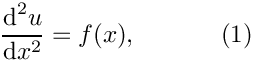
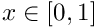
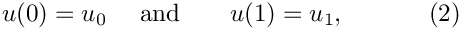
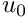
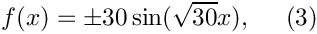
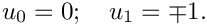
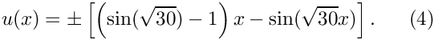
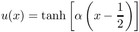

In this document, we demonstrate how a solve the 1D Poisson problem using existing objects from the oomph-lib library:
 in a one-dimensional domain , with boundary conditions where  and are given. are given. |
We provide a detailed discussion of the driver code one_d_poisson.cc which solves the problem for the specific source function

and boundary conditions

In this case, the problem has the (fish-shaped) exact solution


Global parameters and functions
Source functions and problem parameters generally need to be accessible to a variety of oomph-lib objects and we tend to define such functions/quantities in C++ namespaces. Here we use the namespace FishSolnOneDPoisson to define the source function (3) and the exact solution (4). Both functions use the integer value FishSolnOneDPoisson::Sign, which can be set by the "user" in the driver code.
The driver code
In order to solve the Poisson problem with oomph-lib, we represent the mathematical problem defined by equations (1) and (2) in a specific Problem object, OneDPoissonProblem. oomph-lib provides a variety of 1D Poisson elements (1D elements with linear, quadratic and cubic representations for the unknown function) and we pass the specific element type as a template parameter to the Problem. In the driver code, listed below, we use the QPoissonElement<1,4>, a four-node (cubic) 1D Poisson element. We pass the number of elements in the mesh as the first argument to the Problem constructor and the pointer to the source function, defined in the namespace FishSolnOneDPoisson, as the second.
Once the problem has been created, we execute Problem::self_test(), which checks that the Problem has been properly set up. If this test is passed, we proceed to solve the problem: Initially, we set the sign of the source function (defined in the variable FishSolnOneDPoisson::Sign) to -1 and solve, using oomph-lib's Newton solver. We write the solution to output files, using the OneDPoissonProblem's member function doc_solution(), discussed below. We then repeat the process, using a positive sign for the source function.
The problem class
oomph-lib driver codes tend to be very compact and "high-level" because all the "hard work" is done in the Problem specification. For our simple Poisson problem, this step is completely straightforward:
The OneDPoissonProblem is derived from oomph-lib's generic Problem class and, as discussed above, the specific element type is specified as a template parameter to make it easy for the "user" to change the element type in the driver code.
The OneDPoissonProblemclass has five member functions, only three of which are non-trivial:
- the constructor
OneDPoissonProblem(...) - the function
actions_before_newton_solve() - the function
doc_solution(...)
The function Problem::actions_after_newton_solve() is a pure virtual member function of the Problem base class and must be provided. However, it is not required in the present problem so we leave it empty. Similarly, the problem destructor can remain empty as all memory de-allocation is handled in the destructor of the Problem base class. The Problem only stores one private data member, the pointer to the source function.
The Problem constructor
In the Problem constructor, we define the domain length and build a Mesh, using oomph-lib's OneDMesh object which is templated by the element type. The required number of elements and the domain length are passed as arguments to the OneDMesh constructors. The subsequent lines of code pin the nodal values at the two boundary nodes. Next we pass the source function pointer to the elements. Finally, we call the generic Problem::assign_eqn_numbers() routine which does precisely what it says...
The cast in the loop over the elements is required because Mesh::element_pt(...) returns a pointer to the element base class GeneralisedElement, which does not have an access function to the Poisson element's source function pointer.
"Actions before solve"
The pure virtual function Problem::actions_before_newton_solve() must be implemented for all specific Problems and, as the name suggests, should perform any actions that need to be performed before the system of equations is solved. In the current problem, we use Problem::actions_before_newton_solve() to update the boundary conditions in response to possible changes in the sign of the source function. We use the exact solution (specified in the namespace FishSolnOneDPoisson) to determine the boundary values that are appropriate for the sign specified in FishSolnOneDPoisson::Sign.
Post-processing
The function doc_solution(...) writes the FE solution and the corresponding exact solution, defined in FishSolnOneDPoisson::get_exact_u(...) to disk. The argument label is used to add identifiers to the output file names. Note that all output functions are implemented in the generic Mesh class:
- The function
Mesh::output(...)executes theFiniteElement::output(...)function for each element in a mesh. For 1D Poisson elements, this function writes the values of and
and  at
at nptsuniformly spaced points in the element to the specified file. - The function
Mesh::output_fct(...)plots the function specified by the function pointer in its last argument at the specified number of points in each of the constituent elements. This allows point-by-point comparisons between exact and FE solutions. Here we plot the exact solution at a larger number of points to ensure that the exact solution looks smooth even if only a small number of elements are used for the discretisation of the ODE.
Finally, we call the function Mesh::compute_error(...) which determines the square of the L2 error, based on the difference between the exact solution (specified by a function pointer) and the FE solution. We also plot the pointwise error in the specified output file.
Exercises
- Run the code with different numbers of elements. How does the error between the exact and the analytical solution change?
- Compare the error obtained with different element types – replace the four-node Poisson element,
QPoissonElement<1,4>, by its lower-order counterpartsQPoissonElement<1,3>andQPoissonElement<1,2>. - The fish-shaped exact solution (4) is fairly smooth. Postulate a more rapidly varying "exact" solution, such as

which produces a "step" at when
when  becomes sufficiently large. Calculate the source function required for this function to be an exact solution and implement both functions in another namespace,
becomes sufficiently large. Calculate the source function required for this function to be an exact solution and implement both functions in another namespace, TanhSolnOneDPoisson, say. Replace the reference toFishSolnOneDPoissonbyTanhSolnOneDPoissonand repeat the above exercises. - Remove the Dirichlet boundary condition at the left end of the domain. What do you observe? [We shall return to this question in another example where we discuss the application of Neumann-type boundary conditions.]
Source files for this tutorial
- The source files for this tutorial are located in the directory:
demo_drivers/poisson/one_d_poisson/ - The driver code is:
demo_drivers/poisson/one_d_poisson/one_d_poisson.cc
PDF file
A pdf version of this document is available. \